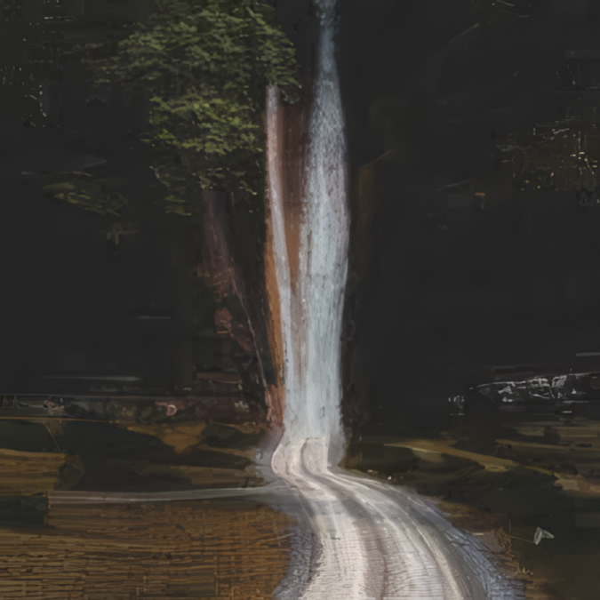

Teslachromatic
b i r c h. The First Memory. 2nd track on the EP
Discography
A late-night archive of songs, memories, and releases. Stream featured tracks, explore singles and albums, and step into the stories behind each chapter of Chroma Glow.
Releases
Every release can become an expandable story card later with cover art, streaming links, Bandcamp buttons, tracklists, and release notes.
b i r c h. The First Memory. 2nd track on the EP
.png)
Album card placeholder. Later this can open a full panel with tracklist and story.

Remember the feeling. Of being seen, important, of meaning something to someone.

Placeholder for art, streaming links, and a short memory fragment tied to the release.
Featured Release
First single from the EP

Released March 20, 2026
Add a description
Associated Artists
A place for collaborators, featured artists, or other projects you want represented on the site.
Artist profile placeholder. Add logo, one-sentence description, featured release, and streaming or social links.
Use this for another collaborator or project tied into the wider Chroma Glow orbit.
Another placeholder card for collective or friend projects if you want this to feel like an ecosystem.
Tools & Sound
This section can become genuinely useful for other producers. Presets, plugin lists, and your master chain can all live here.
Add downloadable preset packs, version notes, or a preview description for each sound bank.
Share the broad chain order and philosophy. Keep it useful without having to reveal every exact setting.
Tools & Sound
The sound of Chroma Glow lives somewhere between clean control and emotional blur. These are the tools I keep coming back to for tone, width, movement, glue, and the soft neon ache that holds the whole thing together.
This section is meant to feel personal, not clinical. Less "gear list," more "this is how the light gets into the room." Each card can hold a screenshot, quick specs, and enough writing space for process notes, favorite use cases, or even track-specific memories.

My main all-in-one mixing environment. It gives me EQ, compression, transient shaping, excitation, sculpting, and utility modules in one place, so it is perfect when I want to move fast but still stay precise. I use it most during shaping and cleanup stages, especially when a sound needs definition without losing emotion. It feels modern and efficient, but still flexible enough to push into more character-heavy work when needed.

This is one of my cleaner surgical tools. I reach for it when I need to carve space, reduce harshness, or make room for another element without the track feeling hollow afterward. It is especially good when a sound needs to stay alive but stop fighting the vocal, the lead, or the kick. It is one of those plugins that helps a mix breathe rather than just making it “correct.”

I use this when I need to control movement in specific frequency ranges instead of flattening the whole signal. It is great for low-end cleanup, harsh upper-mid control, and keeping dense synth layers from getting messy. Usually this is more of a bus or problem-solving tool for me than a color box. It helps hold things together without killing their motion.

This is how I push something forward or soften it without reaching for EQ first. If a drum needs more front edge, or a synth stab feels too pokey, this is one of the fastest ways to fix the feel. It is more about contour than tone. I like it because it can change the emotional posture of a sound in a really immediate way.

I use this to wake things up. When a part feels too flat, too sterile, or too “inside the speakers,” the exciter helps it glow a little more. Sometimes it is warmth, sometimes top-end energy, sometimes just attitude. It is one of the tools that helps digital sounds feel less dead to me.

Sculptor is more of a finishing brush for me. I use it gently when I want a part to sit more naturally in the mix without over-EQing it. It can smooth edges and rebalance the tonal energy in a way that feels subtle but helpful. This is the kind of tool that works best when it is doing just enough that you miss it after you bypass it.

Not the flashiest tool here, but useful when I need to control noise, room spill, or tails that are stepping on the groove. I like having it inside the same suite because it keeps cleanup and tone shaping in one workflow. It is mostly a control move for me, especially on raw or busy material.

This one is for exaggerated lift, edge, density, and modern movement. I do not always use it subtly, and that is kind of the point. It can make synths brighter, widen details, and push textures toward that hyper-defined modern feel. When a sound needs to leap out of the mix or feel more unreal, this is one of my go-tos.

This is one of my glue tools. It helps make things feel more finished, more held together, more like a record instead of a stack of tracks. I especially like it when I want punch and cohesion at the same time. It can get aggressive in a nice way, which fits a lot of my mixes.

One of my favorite visual EQs to work in. It feels fast, clear, and really easy to read when I am making tonal decisions. I use it for both problem-solving and broader shaping, especially when I want to be precise without feeling boxed into a sterile workflow. It is one of those plugins that makes me want to keep mixing.

This is a more musical, tone-first EQ for me. I am usually not reaching for it to perform surgery. I use it when I want to make something feel more expensive, more open, or more elegant. It is especially nice when brightness needs to feel smooth instead of brittle.

This is one of those instant-feel plugins. When something needs that lifted, illuminated, open top-end, Fresh Air gets there fast. I use it carefully because it can change the emotional brightness of a sound really quickly. On the right source, though, it feels like turning on a light behind the track.

This is where I like building analog-style chains without losing workflow speed. I can stack tone, compression, shaping, and utility moves in a way that feels more like a physical desk mindset. It helps me work in “signal path” mode instead of just throwing plugins around randomly.

This is more of a movement tool than a corrective one. I use it for ducking, breathing, pulse, and rhythmic motion when I want a part to feel alive around the kick or the groove. It is useful when the production needs that modern inhale / exhale energy instead of static balance.

This is one of the reverbs I’d use when I want beauty more than realism. It has that lush plate character that sits really well on synths, vocals, and emotional melodic parts. It does not feel cold. It feels reflective, glamorous, and a little cinematic, which fits the Chroma Glow world really well.

I use this when the low end feels present but not persuasive. It helps add weight, focus, and extension without just smashing the sub louder. That makes it really useful on basses, kicks, and sometimes even fuller material when a track needs a little more gravity underneath everything else.

A dependable utility limiter when I need simple level control and clean peak handling. It is not really a “vibe” plugin for me. It is more the kind of thing I use because it is there, fast, and does the job without drama. Sometimes that is exactly what you want.

This is more of a loudness-finishing tool for me. If I want a quick way to bring level up without clipping, this is a simple option. It is useful when I want to hear the mix in a more “released” state before deciding whether I need something more specialized later.

This is more of a seeing tool than a sound tool, but it matters a lot. I use it to check spectrum, phase, level, and overall behavior when I want to confirm that what I am hearing lines up with what the track is doing. It keeps me honest, especially in denser mixes.

A solid stock reverb when I want space without turning it into a whole production statement. It is useful for room feel, depth, and support, especially when I do not need an especially stylized reverb sound. It can stay in the background and help the mix feel dimensional.

Good for simple repeats, rhythmic space, and little moments that need depth without taking over the stereo field. I like mono delays because they can make a part feel farther back or more atmospheric without instantly widening the whole picture. Sometimes that restraint is exactly right.

This is a width and shimmer tool for me. It helps make parts feel more dreamlike, more doubled, more alive around the edges. On the right synth or guitar layer, it can add that slightly blurred emotional motion that fits nostalgic material really well.

This is more of a color and personality move. It can make a sound feel more vocal, more synthetic, more alien, or just more interesting. I like it when something needs identity instead of polish. It is a really fun plugin for taking a simple tone and giving it a strange emotional accent.

I use tape plugins when I want things to feel less perfectly digital. This is more about texture, softness, and slight instability than obvious distortion. It can help a track feel older, warmer, or more haunted in a good way, which fits the memory-soaked side of the project really well.

This one is basically atmosphere in plugin form. Huge tails, unreal echoes, cosmic bloom, and a kind of dreamy scale that can completely change the emotional size of a part. It is one of the most Chroma Glow tools in the whole list because it lets space become part of the melody.

This is a control and loudness tool more than a vibe tool. I use clippers when I want to catch peaks in a harder, more deliberate way before or during limiting. It is one of those practical pieces that can make the whole master chain feel more stable and intentional.
Release Timeline
This is a clean way to show your release order now, and later we can connect each item to a real release card.
Superposition
Single placeholder. Add release mood, short context, or production note later.
Return
Single placeholder.
Aestas Stella
Single placeholder.
Airstream 91
Single placeholder.
Infinite Flight
Single placeholder.
Quattro
Single placeholder.
Bloom
Single placeholder.
Buoyancy
Single placeholder.
Perennial
Single placeholder.
F A L L
Single placeholder.
Amentalio
Single placeholder.
Falling Through Infinity
Album placeholder. Later connect this to tracklist and full story content.
Teslachromatic
Single placeholder.
B I R C H
Single placeholder.
Remember California
Single placeholder.